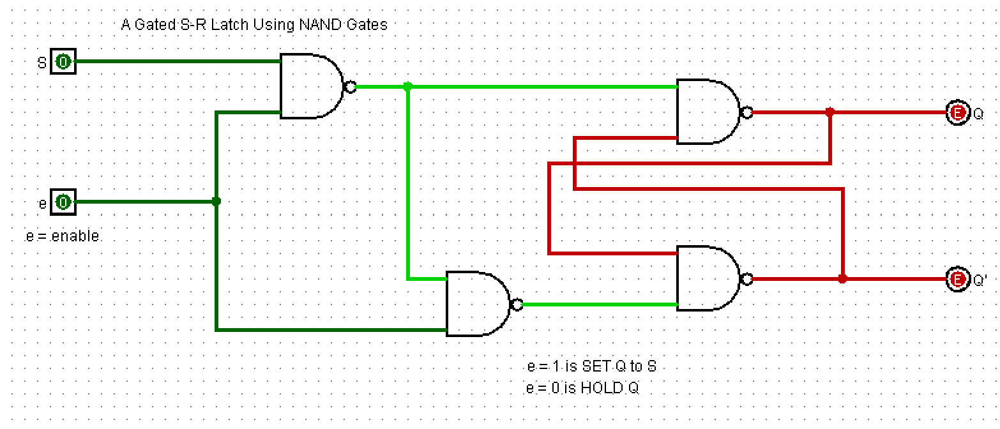
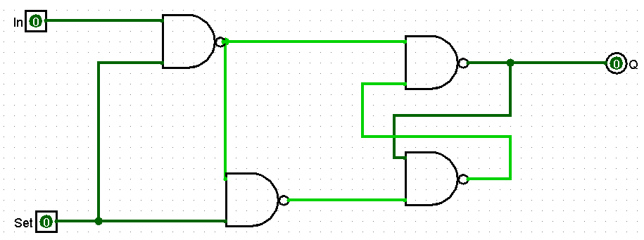
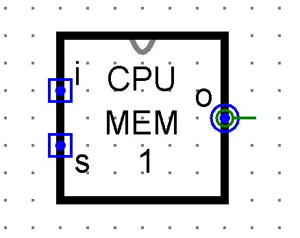

Telling a Circuit When
Sections 4.4 – 4.5 | Estimated time: ~1.75 hours
4.4 The 1-Bit Memory Cell: Adding a Time Window
Page 1 ended on an argument. The S-R latch has a state it should not be left in, and the answer is not a rule telling people to avoid it — because the circuit cannot read rules. The answer is to build something that cannot get there.
This page does that. It also solves a second problem you have not been told about yet, and it solves both with the same two gates.
The second problem
The latch on page 1 changes the instant an input moves. There is no way to tell it not yet.
That is fine when you are poking it by hand. It is useless in a machine, where a value on a shared wire is passing by and eight different registers all have to decide whether this one is for them. Storage that cannot be told when is not storage you can build a computer out of.
Deriving the fix
So we want two things: one data input instead of two, and a second input that grants permission.
Call them In (the value) and Set (the permission). Both active HIGH this time — a 1 means "yes".
Start with the obvious move: put a NAND in front, fed by In and Set, and send its output to the latch's set side.
- While
Set=0, that gate outputs 1 no matter whatIndoes. The set side is not asserted. Good — that is the permission working. - While
Set=1, that gate outputsIninverted.
Now we need the reset side too, and it needs the opposite polarity of In. The obvious thing is to add an inverter. But look at what the first gate is already producing while Set=1: it is producing In inverted. The inverter already exists.
So feed a second NAND from that first gate's output and Set. While Set=1 it inverts again, giving back In itself; while Set=0 it outputs 1, same as the other one.
Two cross-coupled NANDs for the latch, two more in front for the gating, and the first gating gate doubles as the inverter. No separate NOT.
This is the same move as noticing that a spare pin can do a second job — a small economy that falls out of looking at what you already have rather than adding what you think you need. Real designs are full of them.

Why the forbidden state is now unreachable
The forbidden state needs both latch inputs low at the same time. Trace what that would require here.
The first gate goes low only when In=1 and Set=1. The second gate goes low only when the first gate's output is 1 and Set=1 — and the first gate's output being 1 means In was not 1.
So reaching the forbidden state would require In to be 1 and not-1 simultaneously.
Nobody has to remember a rule. Nobody has to be careful. The bad combination is not reachable by any sequence of inputs, because the wiring makes it a contradiction.
That is what page 1 was building toward: the engineering answer to a hazard is a structure in which it cannot occur, not a warning in the documentation.
What it does, and how you use it
Set | In | Q | |
|---|---|---|---|
| 0 | 0 | holds | Not listening |
| 0 | 1 | holds | Not listening — In is ignored entirely |
| 1 | 0 | 0 | Following In |
| 1 | 1 | 1 | Following In |
To store a bit — this is the procedure you will use for the rest of the course:
- Put the value you want to store on
In. - Raise
Setto 1. - Return
Setto 0. The value is now fixed inQand stays there until the next timeSetgoes high.
Set is 0Read that table again and notice which rows are the normal case. In a running machine Set is low almost all of the time — the cell spends its whole life holding, and writing is a brief interruption.
That is the opposite of how most people first picture memory. Storing is not the active thing the circuit does. Storing is what it does when nothing is happening to it.
Transparency
While Set is 1, the output follows the input continuously — change In and Q changes with it, immediately, for as long as the permission lasts. The cell is said to be transparent during that window.
Right now that is just a description. Section 4.5 is about what it costs.
This is MEM_1BIT, and it is the cell your CPU is made of
Give this circuit a tab of its own called MEM_1BIT, with exactly three pins.
| Pin | Width | Direction | Notes |
|---|---|---|---|
In | 1 | in | Active HIGH — the value to store |
Set | 1 | in | Active HIGH — while 1, Q follows In; at 0 it holds |
Q | 1 | out | The stored bit |

There is no Q' output. The latch inside produces one, and it is not brought out to a pin, because nothing downstream reads it. A pin nothing uses is a wire to maintain and a thing to mis-connect. Interfaces get smaller as designs settle.
Set both input pins to 2-state with pull-down behaviour. Pull-down means they come up at 0 after a simulation reset — and with these active-HIGH inputs, 0 means "not being written", which is the harmless state.
Notice that is the same pin setting that made your raw SR_LATCH come up flickering on page 1. A pull-down is just a pin coming up at 0; whether 0 is safe depends entirely on what the pin means. Here it is safe. There it was the forbidden state.
Week 5 instantiates these exact pins, eight times. A different name or a fourth pin means the register does not wire up.
Optional: what other books call this circuit
Purely a vocabulary note, so that outside reading matches what you built. Nothing here is assessed.
This course calls the component MEM_1BIT and its inputs In and Set, matching the build page and what you will hear in lab.
Most textbooks call a circuit with one data input and one enable a gated D latch — "D" for data. If you look this up, that is the term to search for. A gated S-R latch is a near relative with separately gated set and reset inputs; ours has one data input, so it is the D form.
Give it a face
One last step, and it is graded: edit the circuit's appearance so the block reads as a labelled square rather than as Logisim's default.

This is not decoration. Next week you place eight of these side by side; the week after, more again. Eight gate-level tangles on one canvas is unreadable. Eight labelled blocks is a diagram you can follow.
It is also the other half of why this course uses Logisim Classic. Gate-level shapes make primitives legible — you can see an XOR is an XOR. A clean block makes a composite legible. Same argument about seeing structure at a glance, applied at two different scales.
You have a cell that stores when told to. Something has to do the telling — and in your CPU that something is the control unit, raising Set on exactly the register that should capture what is on the bus. The decoders you built in Week 3 are what turn "register 2" into the one Set line that goes high.
4.5 Level and Edge: Where Your CPU Uses Each
Your memory cell is transparent while Set is high. This section is about what that costs, how your machine pays it, and about the one place in your CPU that solves the problem a completely different way.
1. What transparency costs
While Set is high, a value passes through the cell and out the other side. If whatever is feeding In changed during that window, the cell would capture the new thing instead of the thing you meant.
Worse: imagine a path where a cell's output eventually comes back around to its own input — through an adder, say, and back. A counter is exactly that. If the permission window is open long enough, the value can go round the loop more than once. The circuit does not do the wrong thing so much as do the right thing an unpredictable number of times, which is harder to debug and much harder to trust.
2. How your machine actually solves it
Here is the answer, and it is not a rule about being careful. It is the shape of the control signals.
Moving a value from one register to another — call them R1 and R2 — takes four steps, in this order:
- R1's
enablegoes high. R1's value is now on the bus. - R2's
Setgoes high. R2 takes the value from the bus. - R2's
Setgoes low. The value is now held in R2. - R1's
enablegoes low. R1 stops driving the bus.
set pulse sits inside the enable pulse — it starts later and ends earlier. That nesting is the whole answer.Read the picture. The source register drives the bus for the entire time the destination is transparent, and for a moment either side of it. The data on the bus cannot change during the window, because the thing putting it there has not stopped yet.
Section 4.4 removed the forbidden state by making it unreachable in the wiring. This removes the transparency hazard by shaping the control signals so the dangerous case cannot arise.
Neither is a rule anyone has to follow. Both are structures in which the bad thing is not available. That is what engineering a hazard away looks like, and you have now seen it twice in two pages.
Notice what this costs: a register-to-register move takes four steps rather than one. And something has to produce those four steps, in order, every time. That something is the clock.
3. The clock
Week 3 closed by promising that the clock arrives this week. Here it is.
A clock is a signal that does nothing but alternate. It carries no data. Its entire job is to say now — and then now again, forever, at a steady rate.
That is the mechanism by which a machine that computes everything continuously is persuaded to take turns. Every circuit you have built is always doing its thing, all the time, as fast as electricity crosses it. Left alone, they would all do it at once and trip over each other. The clock is what divides that continuous activity into steps, so that things can happen in an order.
4. And why the clock itself needs something new
The clock in your CPU is advanced by a single input — you toggle it by hand while testing, and later it runs on its own. Every time that input goes from 0 to 1, the machine advances one phase.
Think about what that requires. The device has to change state once per transition and then ignore the input while it is held. A level-sensitive cell cannot do that: while the input is high, it keeps responding. Hold the input up for a second and a level-sensitive counter would race through millions of phases.
What is needed is a device that acts on the change and not on the level. That device is an edge-triggered flip-flop, and your CPU's clock is built from one.
Level-triggered: responds the whole time the control signal is high. Your memory cell.
Edge-triggered: responds only at the instant the control signal changes, and ignores it otherwise. Your clock.
5. Both, in your machine, doing different jobs
| Part of the CPU | What holds the bit | Why that one |
|---|---|---|
| The datapath registers, RAM, the program counter, the memory address register |
Level-sensitive MEM_1BIT, written by a Set pulse |
Simple to build and easy to trace with a probe — and the control signals already guarantee the data is stable across the whole pulse, so the transparency problem never arises. |
| The control section the clock |
Edge-triggered flip-flop | It must advance exactly once per input transition and ignore the input while it is held. Only an edge-triggered device does that. |
Neither of these is a compromise. Each is the right device for the job it does, and a machine that used one everywhere would be worse at something. That is worth holding on to, because it is easy to read "our registers aren't clocked" as a shortcut. It isn't one — it is a design decision with reasons, and you have just read them.
6. How an edge-triggered device is built
You are not building one, but you should know how the trick works, because it uses the cell you just made.
Put two gated cells in series and drive their enables with opposite polarities of the clock:
While the clock is 0 the master is open and tracks D; the slave is closed and holds. When the clock rises, the master closes — freezing whatever D was just before the rise — and the slave opens and takes that frozen value.
Because the two are never open together, there is never a path from D straight through to Q. One value moves through, once, per rising edge. That is edge-triggering, built out of two level-triggered parts.
"The value just before the edge" needs a small qualification: the input has to be steady for a moment before the edge and for a moment after it, or the capture is unreliable. Those two moments are called setup and hold times.
You do not need numbers for them now. You need to know the idea exists, because in Week 11 "everything must settle before the next phase" stops being a fact about chips and becomes a constraint you have to satisfy in your own design.
One footnote for when you meet the real thing: the flip-flop in your CPU's clock is a J-K with both of its inputs tied high, which makes it toggle on every edge rather than copy an input. Different type, same edge behaviour, and Week 11 is where you will place one.
7. Why you are not building one this week
Since Week 3 this course has been consistent: every circuit you build reappears later as a component of something bigger. A flip-flop would break that pattern, so here is the honest reason it is not on the assignment.
You build the cells your datapath is made of. The clock's flip-flop arrives in Week 11 along with the circuit that uses it, and there you will place a ready-made one rather than build it — because building a J-K from gates is a week this course does not have, and it is not what this course is teaching you. What you needed from it, you now have: you know what edge-triggering is, why it exists, and where your machine uses it.
Three devices — the raw latch, your memory cell, and a flip-flop — given the same input on the same time axis. The difference between following and sampling is hard to describe and immediately obvious once you see it drawn.